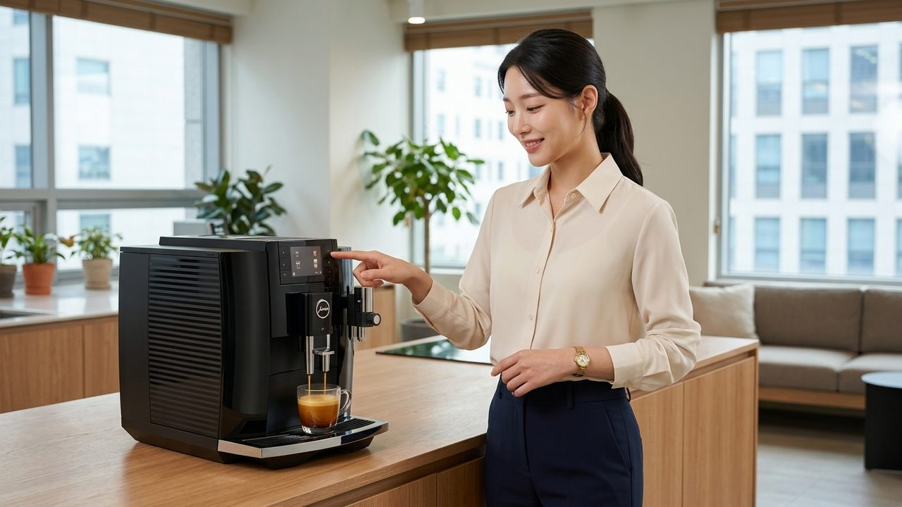

“점심 먹자마자 커피 들고 나섰는데?” 방금 먹은 영양소 흡수 방해하는 뜻밖의 습관
점심 식사를 마치자마자 동료들과 함께 테이크아웃 전문점으로 향해 시원한 아메리카노를 손에 쥐는 모습은 현대인의 일상에서 매우 익숙한 풍경입니다.
기름진 식사 후 입안을 개운하게 씻어내고 오후의 나른한 졸음을 쫓아내려는 목적으로 커피를 곁들이는 경우가 많습니다.
하지만 정성껏 챙겨 먹은 식단 속 영양분이 체내에 흡수되기도 전에 커피 성분과 맞물려 배출될 수 있다는 사실을 인지하는 분들은 많지 않습니다.
식사 직후의 커피 섭취는 미네랄 흡수율 저하와 소화관 괄약근 기능에 직접적인 영향을 미치기 때문입니다.
점심 식사 직후 마시는 커피가 영양소 흡수를 차단하는 생리학적 배경
우리가 섭취한 음식물이 위장에 도달하면 위산과 소화 효소가 분비되며 잘게 분해되는 1차 소화 과정을 거칩니다.
이 과정에서 채소, 곡류, 육류에 들어있던 철분과 칼슘 등의 미네랄이 이온화되어 소장으로 내려갈 채비를 마칩니다.
그러나 소화 작용이 채 시작되기도 전에 커피가 위장 안으로 쏟아져 들어오면 영양소 흡수 경로에 즉각적인 간섭 현상이 일어납니다.
커피 원두에 풍부하게 함유된 폴리페놀 성분이 위장 내에서 미네랄 분자와 강력하게 결합하여 침전물을 만들어내기 때문입니다.
특히 여성이나 청소년, 채식 위주의 식단을 유지하는 분들에게 중요한 식물성 비헴철의 경우, 식후 커피로 인한 흡수율 감소 폭이 두드러지게 관찰됩니다.
탄닌 성분의 결합력과 불용성 탄닌산철 침전물 형성 원리
커피의 떫은맛과 독특한 풍미를 담당하는 주요 물질은 탄닌(Tannin)으로 대표되는 폴리페놀 복합체입니다.
탄닌 분자는 금속 이온과 결합하려는 화학적 친화력이 매우 강력한 특성을 지니고 있습니다.
식사 직후 위장 내에 탄닌이 유입되면 음식물 속 2가 철분 및 3가 철분 이온을 자석처럼 끌어당겨 한 덩어리로 묶어버립니다.
이 결합 반응의 산물이 바로 물에 녹지 않는 단단한 침전물 형태인 '탄닌산철(Iron Tannate)'입니다.
탄닌산철로 굳어진 철분은 소장 점막 상피 세포의 영양소 흡수 통로를 통과하지 못합니다.
결과적으로 체내로 흡수되어 혈액을 생성하는 데 쓰이지 못하고 소화관을 따라 그대로 이동하여 대변으로 배출되는 경로를 밟게 됩니다.
| 섭취 시점 | 비헴철(식물성 철분) 흡수율 | 체내 결합 반응 | 영양학적 영향 |
|---|---|---|---|
| 식사 중 및 식후 5분 이내 | 35% ~ 60% 수준으로 저하 | 탄닌산철 침전물 대량 형성 | 철분 이용 효율 급감 |
| 식후 30분 경과 | 70% 내외 유지 | 부분적 결합 및 위 배출 진행 | 경미한 흡수 간섭 |
| 식후 60분 (1시간 뒤) | 90% 이상 정상 흡수 | 소장 이동 완료로 결합 차단 | 영양소 보존 및 소화 안정 |
하부식도괄약근 압력 저하와 위산 역류가 초래하는 위장 부담
식후 커피가 초래하는 또 다른 신체 반응은 소화관 괄약근의 긴장도 저하 현상입니다.
위장과 식도가 연결되는 경계 부위에는 음식물이 거꾸로 솟구치지 못하도록 막아주는 하부식도괄약근(LES)이 자리 잡고 있습니다.
커피에 함유된 카페인은 근육을 이완시키는 성질이 있어, 괄약근의 압력을 일시적으로 헐겁게 느슨하게 만듭니다.
식사를 마쳐 음식물과 위액으로 가득 차 팽창된 위장 환경에서 밸브 역할을 하는 괄약근이 열리는 상황이 조성됩니다.
이로 인해 산도가 높은 위산과 단백질 소화 효소인 펩신(Pepsin)이 식도 벽을 타고 올라오며 가슴 부위가 타는 듯한 뻐근함과 목 이물감을 일으키게 됩니다.
디카페인 커피의 영양소 영향과 폴리페놀 잔존 여부 분석
많은 분들이 카페인이 제거된 디카페인 커피를 마시면 식후에 바로 마셔도 안전할 것이라고 생각하십니다.
카페인이 하부식도괄약근을 이완시키는 부담은 덜어줄 수 있지만, 미네랄 흡수 방해 측면에서는 차이가 크지 않습니다.
철분과 결합하여 흡수를 방해하는 핵심 인자는 카페인이 아니라 원두 자체에 내재된 클로로겐산과 탄닌계 폴리페놀 성분이기 때문입니다.
디카페인 가공 공정을 거치더라도 원두 고유의 폴리페놀 함량은 고스란히 유지됩니다.
따라서 카페인 민감도가 낮아 디카페인을 선택하시는 분들이라도 영양소 흡수를 온전히 지키기 위해서는 동일한 시간 간격을 두는 관리가 필요합니다.
| 음료 분류 | 탄닌 및 폴리페놀 함유 | 철분 결합 작용 | 식도 괄약근 이완 영향 |
|---|---|---|---|
| 일반 아메리카노 | 풍부 (클로로겐산 다량) | 탄닌산철 침전물 형성 | 카페인으로 인한 압력 저하 확인 |
| 디카페인 커피 | 동일 수준 유지 | 탄닌산철 침전물 형성 | 괄약근 자극 영향 상대적 경감 |
| 미온수 및 보리차 | 0% (탄닌 성분 없음) | 결합 간섭 전혀 없음 | 위장 점막 보호 및 소화 촉진 |

영양소 손실을 방어하고 소화를 돕는 식후 1시간 골든타임 수칙
커피가 지닌 항산화 효과와 각성 효능을 건강하게 누리기 위한 핵심 열쇠는 바로 섭취 시점의 분리입니다.
위장에서 음식물이 1차 분해를 마치고 유미즙 상태로 십이지장으로 통과하는 데는 대략 45분에서 60분의 시간이 소요됩니다.
식사를 마친 직후에는 가볍게 미온수 서너 모금으로 입안을 헹구어 텁텁함을 덜어내는 방법을 권장합니다.
물 한 모금은 식도에 남은 잔여물을 씻어내리고 위장 내 소화액의 점도를 안정적으로 조절해 줍니다.
커피는 오후 업무를 본격적으로 시작하는 식후 1시간 무렵에 따뜻하게 음용하시는 것이 영양소 흡수를 지키고 속쓰림을 줄이는 지혜로운 습관입니다.
- 식사 직후 마시는 커피의 탄닌 성분은 철분과 결합해 불용성 침전물을 형성하여 체내 흡수를 크게 저하시킵니다.
- 카페인은 식도 괄약근의 압력을 느슨하게 만들어 위산과 소화 효소의 역류를 일으킬 수 있습니다.
- 식후 45분에서 1시간 뒤에 커피를 음용하면 영양 손실 없이 커피 본연의 활력을 건강하게 누릴 수 있습니다.